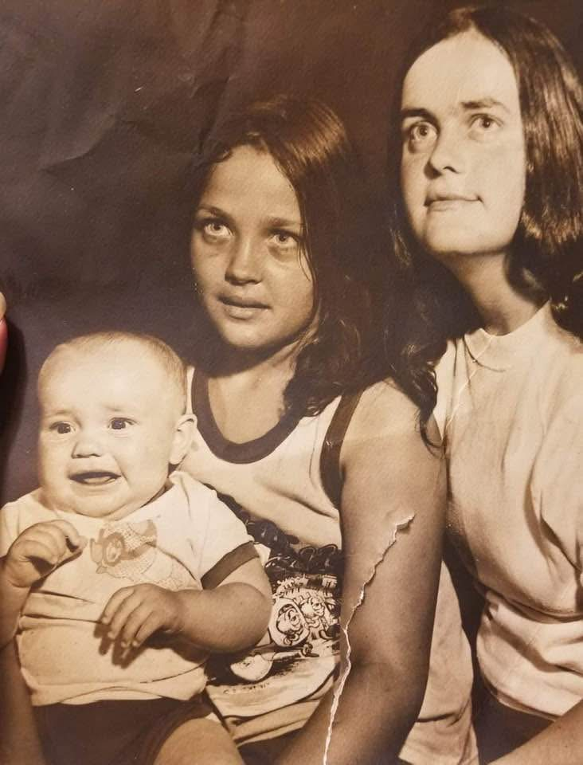
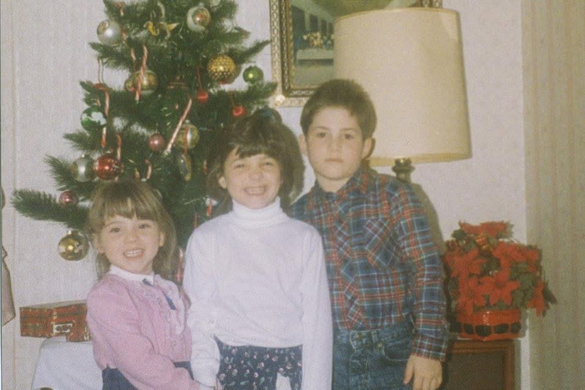

{kind=link}
{kind=link}


OUR COLLECTION
Every image carries a story. Whether a photograph has faded with time, suffered damage, or simply needs new life, TruePortrait Revival focuses on preserving the details that make each memory meaningful.
This gallery showcases restoration artistry, family legacy portraits, and creative transformations designed to honor the people and moments captured within each photograph.
FEATURED RESTORATION
A single photograph can hold generations of memories. Through careful restoration, damaged and aging images can be brought back to life while preserving the story they carry.
Restoration is not about changing the past. It is about honoring the people, expressions, and moments already captured within the photograph.
Each restoration is carefully refined to bring back clarity, balance, and beauty while respecting the original image.
Restore Your PhotographBEFORE & AFTER RESTORATION
Each restoration reveals the beauty that was already there. These examples show how treasured photographs are carefully renewed while preserving the people and stories within them.






RESTORATION PORTFOLIO
Restoration is more than repairing an image. It is about honoring the people, relationships, and memories captured within each photograph. Every project is carefully refined to preserve the story behind the picture for generations to come.

Damaged, faded, or aging photographs are carefully restored while preserving the original people, expressions, and emotions captured within the image.
Faded photographs can be renewed with balanced color, improved detail, and enhanced clarity while maintaining a natural appearance.
Meaningful family photographs can be preserved and transformed into timeless portraits that celebrate generations and connections.
CUSTOM ARTISTRY
Beyond restoration, photographs can become personalized works of art, keepsakes, and meaningful designs created to celebrate the moments and people who matter most.
Photographs can become personalized artwork, keepsakes, and meaningful designs created to preserve important moments.
Explore Custom Portraits
PRESERVE THE MEMORY
Behind every photograph is a person, a relationship, and a moment that cannot be replaced.
TruePortrait Revival helps preserve those memories through thoughtful restoration and artistic care, creating portraits that can be treasured for generations.
Begin Your RestorationYour photograph has a story worth preserving. Let TruePortrait Revival help bring that story back to life.
{kind=link}